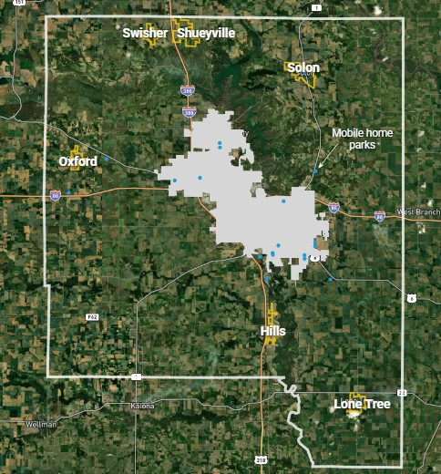
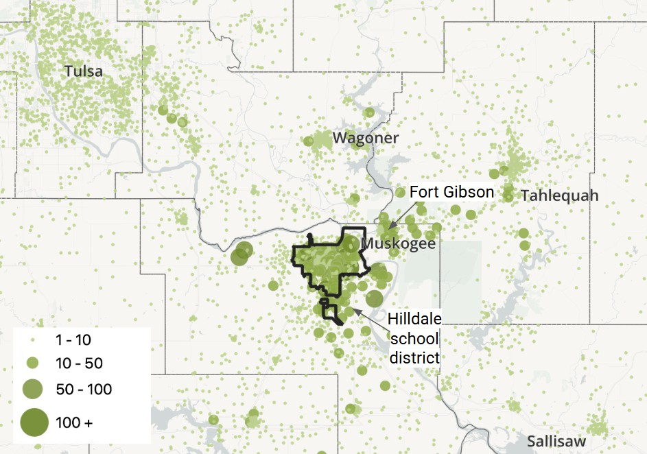

Johnson County Housing Study
Johnson County Housing Study
 Johnson County Housing Study
Johnson County Housing Study
This dashboard supports Johnson County's Housing Assessment Study, conducted by CommunityScale on behalf of the County's Planning, Development, and Sustainability Department.
One of the priorities in the Johnson County comprehensive plan is equitable access to safe and affordable housing. This priority includes addressing the need for affordable housing supply and improving the quality and safety of existing and future housing for residents.
Led by the Planning, Development, and Sustainability Department along with the Social Services Department, this housing assessment study is intended to help inform housing, land use, transportation, and potentially other policy decisions of local elected officials as well as inform comprehensive or other planning documents for the unincorporated area and for each small city at those Cities’ discretion.
This study focuses on unincorporated Johnson County plus the six small cities of Hills, Lone Tree, Oxford, Shueyville, Solon, and Swisher. These areas are referred to collectively as the “non-metro area.” Unless otherwise indicated, this study’s data excludes the cities of Iowa City, Coralville, University Heights, Tiffin, and North Liberty. These cities were assessed by a similar study concluding in 2025. The study also includes a focus on the county’s manufactured home parks (MHPs), including those within the metro area.



Non-metro Johnson County’s household population has been growing at a steady pace over the past 15 years. If this trend continues, the county can expect to add more than 700 net new households over the next decade, a 6-7% increase.
Like many parts of the country, non-metro Johnson County’s population has been aging significantly over recent years.
Current trends suggest the 65+ cohort will be the fastest growing by far, with most other groups losing population over the next decade. The non-metro area needs to continue attracting young people and new families to keep the community sustainable in the long-term.
While Johnson County’s non-metro area has a large supply of owner-occupied houses, there are not enough options for households interested in alternative choices.
For example, to help grow the population of young adults, the non-metro area needs a higher share of rental units which are often a new household’s entrypoint to a community before purchasing a home. And, as the non-metro area’s growing 65+ population ages, many will be looking for opportunities to downsize without leaving the community, such as by trading their larger house for small ownership options like condos and townhomes.
Most of the non-metro area’s housing stock consists of single family homes. There is a relatively small supply of attached single family (i.e. townhomes and duplexes) and multifamily available. While this mix aligns with the preferences of the region’s higher-income households, it does not offer enough choices for middle- and lower-income households who tend to prefer a wider range of types, including more multifamily.
As Johnson County’s non-metro area grows, its income mix is becoming more polarized, adding households among higher and lower income levels at a faster rate than those in middle-income levels.
Growth at higher income levels could translate to opportunities for new market rate housing. More lower-income households add pressure to the naturally affordable housing stock and demand for more subsidized units. The share of middle-income households could increase with the addition of more moderately priced housing options.
Compared to 2015, Johnson County’s non-metro area has seen a 16% decline in the number of families with children. At the same time, there have been increases in the numbers of adults living with roommates, single person households, and seniors living alone.
Historically, Johnson County’s non-metro area has been a relatively affordable place to buy. Households earning the median income could comfortably afford well in excess of the median home price since before 2010. However, in recent years, as prices rise and interest rates spike, the median income is just enough to afford the median priced home and lower-income households are increasingly priced out of the market.
While some people commute longer distances, most of the people who work in Muskogee live within or just outside the city. The most popular neighborhoods outside of Muskogee are concentrated in Fort Gibson and the Hilldale school district.
Muskogee does not have enough available housing to attract more of these households into the city.

Especially on the east side, many of Muskogee’s neighborhoods are at least as stable and desirable as those in competing neighborhoods just outside the city line. This market strength represents a solid foundation to build from as Muskogee seeks to attract more people, families, and local employees to live in the city.
The neighborhoods in Muskogee that are less competitive in today’s market represent inventories lower-cost housing and vacant properties that could be systematically renovated and rebuilt over time to provide a renewed supply of quality, attainable housing stock.
The map at right compares neighborhoods within and around Muskogee in terms of their relative stability and market condition. The map includes additional layers supporting this assessment, including parcel value per acre which helps highlight properties that are particularly well-invested or under-invested.
Housing and neighborhood condition assessment. Explore in full screen.
The Muskogee region is expected to grow by about 1,725 households over the next 10 years. About 1,500 of these net-new households earn annual incomes above $80,000, making them particularly equipped to pay market rate prices for new houses and apartments.
Muskogee should strategically position to attract a share of this new growth, especially the higher-earners who can help support new development of market rate housing.
Muskogee should take steps to tap the region’s current growth wave and reverse its household decline toward a decade of renewed growth.
600 net-new units by 2030
Reverse the tide: Gradually transition from losing 100 units annually to gaining 175 units per year.
1,500 net-new units by 2035
Hit a new stride: Maintain a new pace of at least 175 net new units per year.
This list of barriers to housing access and production is informed by the study’s detailed analysis and stakeholder focus group discussions. New policies and investments on the part of the City and other stakeholders should be designed to confront these challenges.
Based on results of the public survey distributed during the study process, most residents also consider these issues among the most important housing topics for the City to address.
Land and infill challenges
Little publicly owned land
Disinterested private owners
Development risk
Limited developer pool
High development and financing costs
Rising construction costs
Low price expectations
Elevated mortgage rates
Increased financing costs
Constrained public resources
Unused vouchers
Limited municipal funding
Competition from other communities
School preferences
Commuting distance
Perception challenges
The following recommendations are designed to confront the barriers to housing production and capture the growth and market opportunities available to Muskogee over the next several years. These are explained in more detail in the Recommendations section of this study, including an analysis of their relative cost, priority, and the City or stakeholder agency that could be tasked with leading each.
Based on the public survey released as part of the study process, residents assigned meaningful levels of priority to all of these strategies. The three highest ranking strategies from the survey were: Old Township neighborhood infill; quality of life investment; and maximizing accesss to affordable housing.
Launch a marketing campaign to promote Muskogee to developers.
Invest in resources, programs, and institutions that enhance Muskogee’s overall quality of life.
Promote housing in and around downtown
Encourage infill development in Old Township neighborhoods
Leverage the City’s incentive fund to catalyze more infill development opportunities.
Maximize access to existing affordable housing inventory and resources.
Catalyze new housing development in Muskogee’s suburban periphery.
The City of Muskogee Welcome to Muskogee, where opportunity meets community. Located at the crossroads of major highways and rail lines, Muskogee offers a prime location for businesses looking to expand or relocate. Muskogee is known for its affordable cost of living, excellent schools, and a thriving cultural scene that blends history, music, and outdoor recreation. Whether you're an entrepreneur, a skilled worker, or someone looking to invest in a promising community, Muskogee is the place to grow, live, and thrive.
CommunityScale is a pioneering urban planning and spatial data analysis company serving clients across the United States. Follow us on LinkedIn and X.